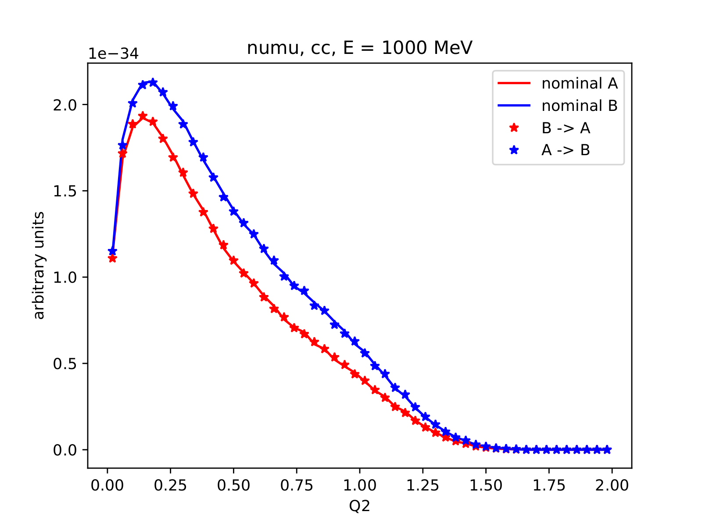
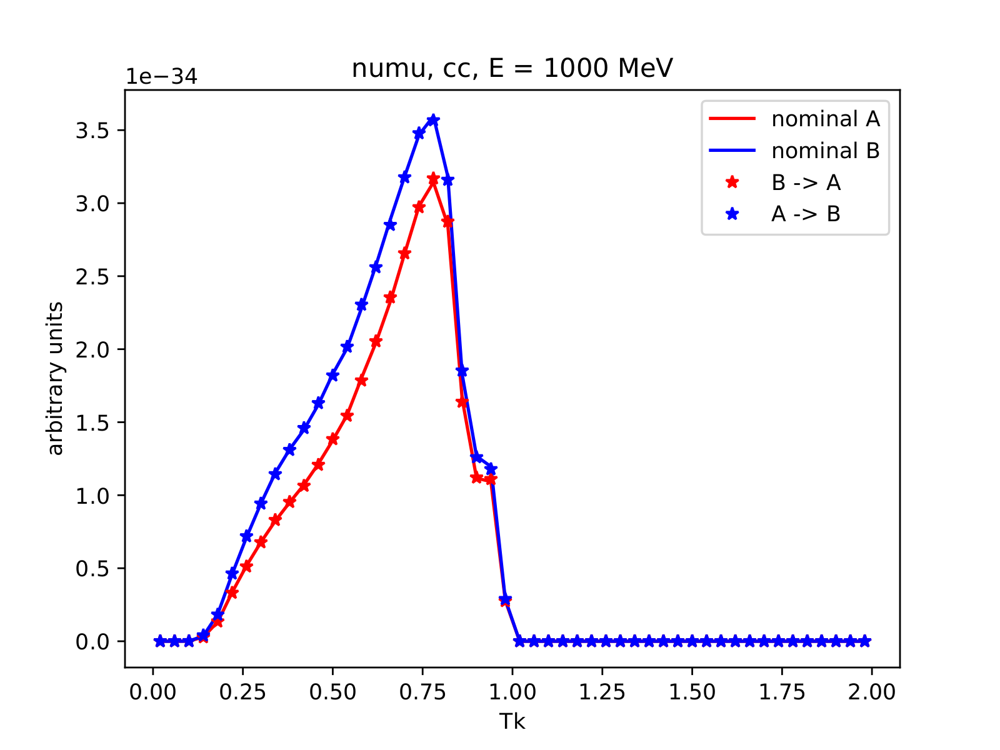
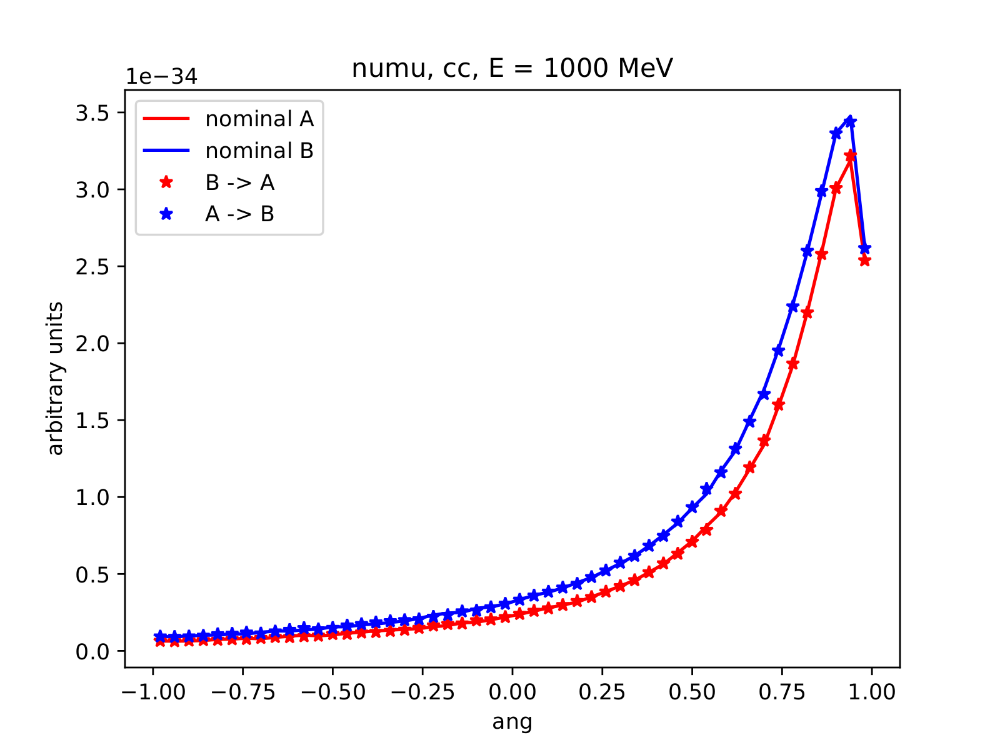
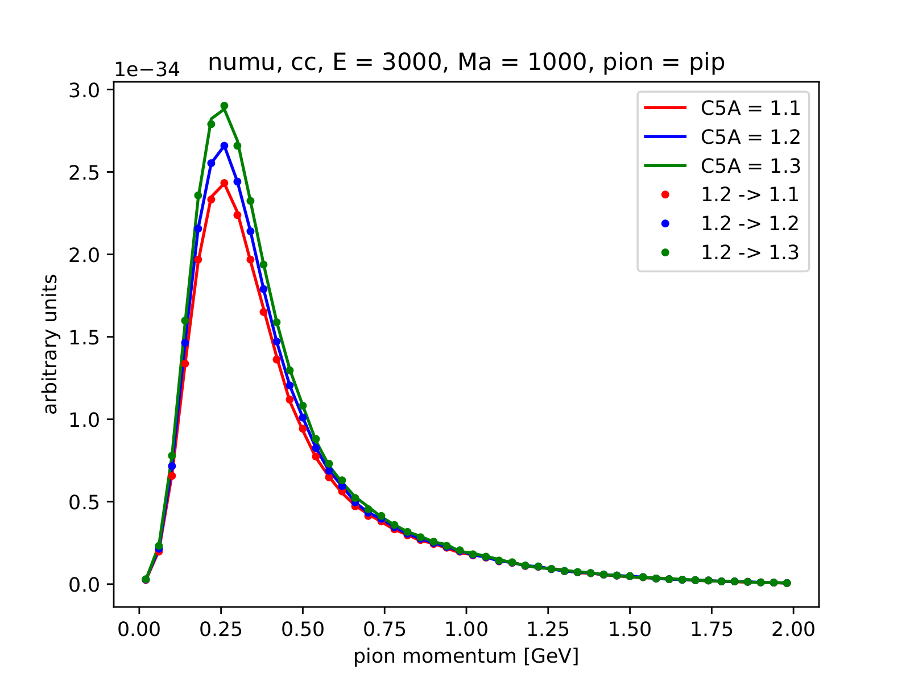
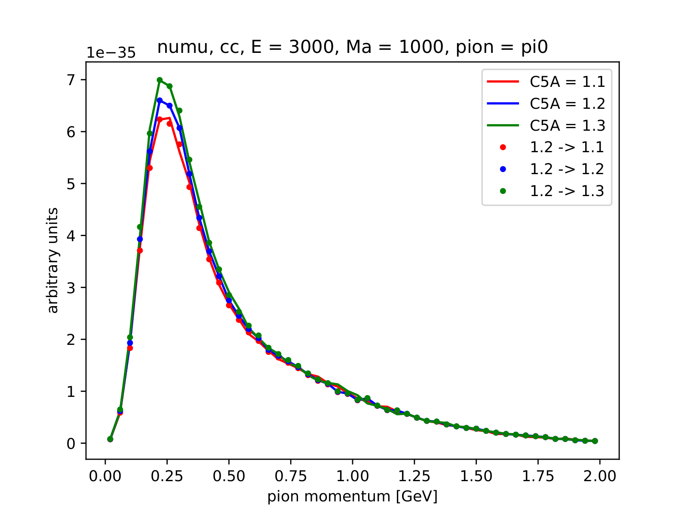
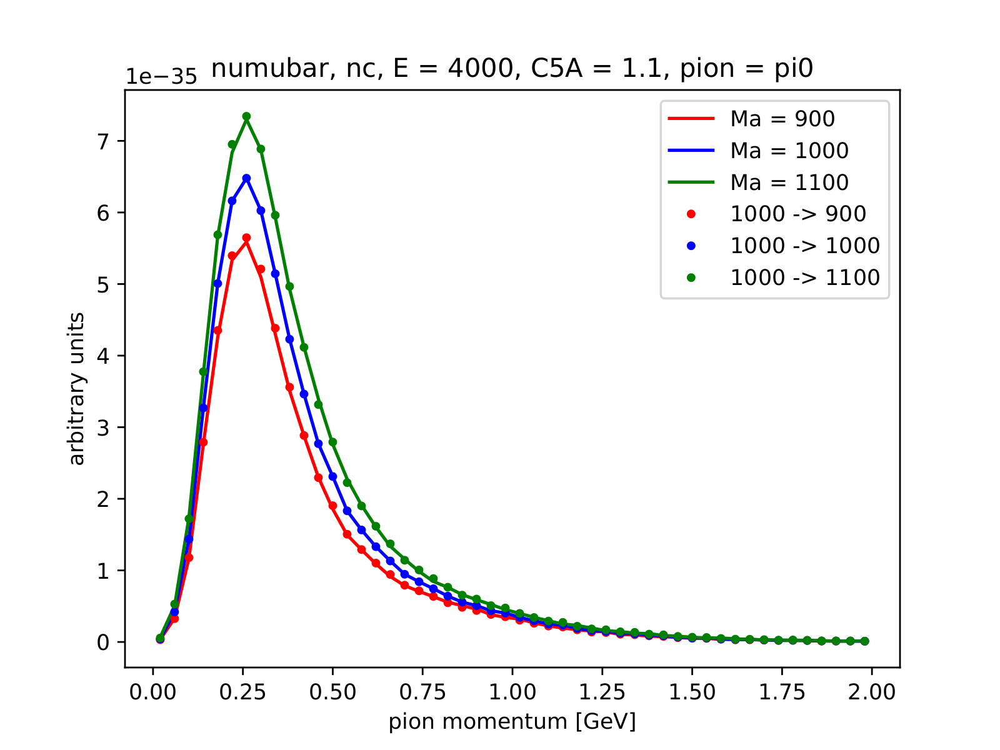
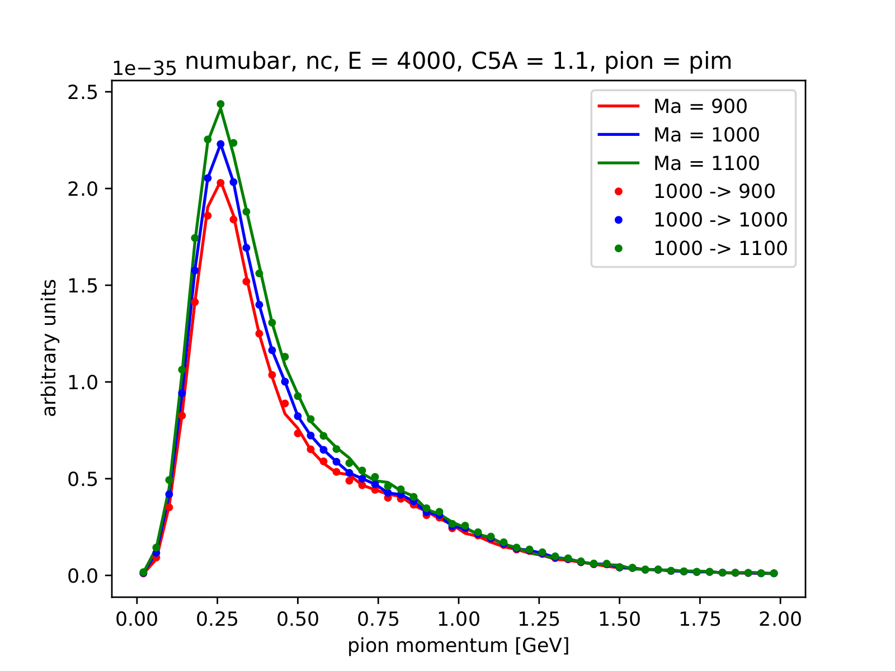

Navigate:
PgDn / PgUp - next / previous slide
Space / Shift+Space - next / previous slide
Esc - expo mode
ongoing project
based on Luke Pickering and Patrick Stowell work
reweighting framework created by Cezary Juszczak
QEL is done (CJ)
RES in progress (TG)
available in reweighting branch
There are two output files:
One can disable unwanted output
reweight_to <nuwro_output.root> \
-p param1 val1 \
-p param2 val2 \
-p param3 val3 \
...
[-o <weighted_events.root>] \
[--no_weights] [--no_events] For quasi-elastic scattering the following knobs are available:
qel_cc_axial_mass
qel_nc_axial_mass
qel_s_axial_mass
delta_s
Simulation A:
-p "qel_cc_axial_mass = 1000" \
-p "qel_nc_axial_mass = 1000" \
-p "qel_s_axial_mass = 1000" \
-p "delta_s = 0"Simulation B:
-p "qel_cc_axial_mass = 1200" \
-p "qel_nc_axial_mass = 1200" \
-p "qel_s_axial_mass = 1200" \
-p "delta_s = -0.2"
 
For resonance pion production the following knobs are available:
pion_axial_mass
pion_C5A
 
 
Finishing of reweighting is one of our priorities
QEL - done, RES - almost done
Next seps:
add more parameters
add reweighting for FSI